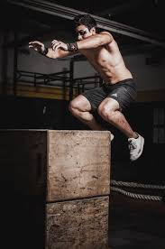
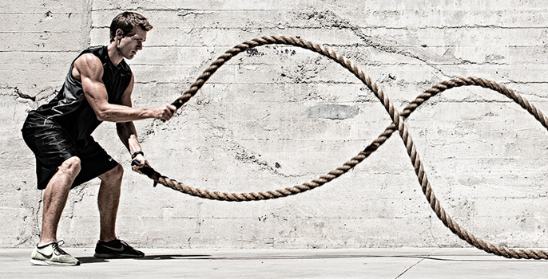
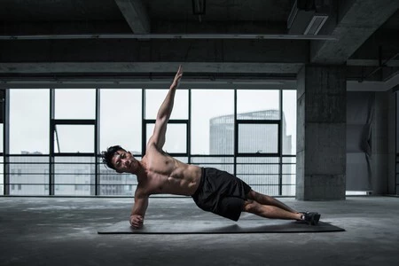

.jpg) MOVILIDAD
MOVILIDAD
VELOCIDAD
 FUERZA EXPLOSIVA
FUERZA EXPLOSIVA

PIOLMETRIA
RESISTENCIA
ISOMETRICO
Un entrenamiento ideal para un atleta combina //FUERZA EXPLOSIVA//RESISTENCIA//VELOCIDAD//RECUPERACION//.
Se estructura de forma periodizada (ajustando la carga y la intensidad según la temporada) y no solo implica practicar la disciplina central, sino también sesiones específicas en el gimnasio y en la pista.
En este caso en especifico dejamos unicamente la modalidad de ejercicios para construir un ATLETA IDEAL,pero dependiendo tu deporte tienes enfoques por lo tanto ejercicios distintos,por lo que te recomendamos usar estas mismas modalidades pero que puedas elegir TU los ejercicios.
MOVILIDAD
FUERZA EXPLOSIVA

PIOLMETRIA
RESISTENCIA
ISOMETRICO